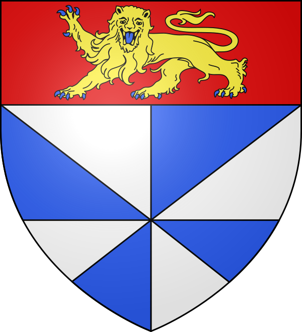
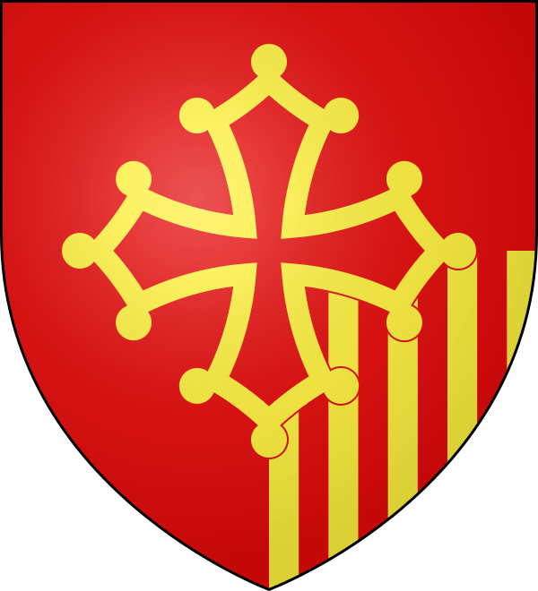
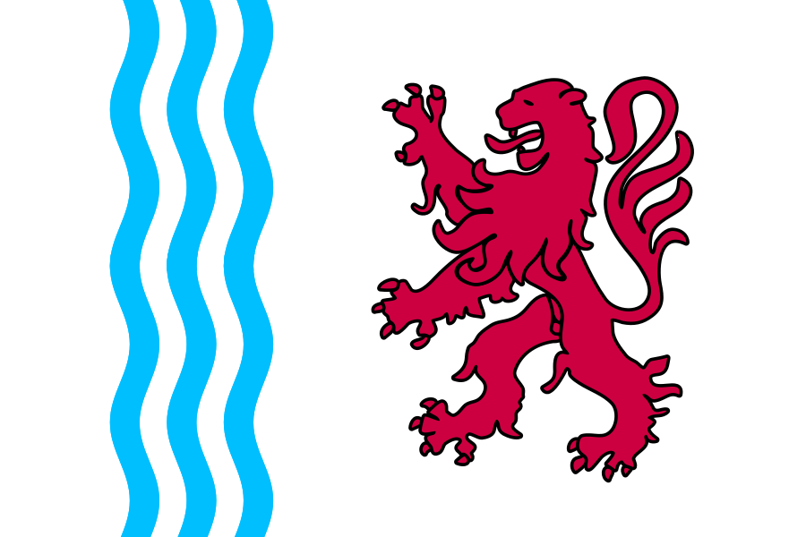

Pays du monde
Europe, Amériques, Asie, Afrique, Océanie — drapeau, capitale et position sur la carte.
Flash Cards
CartaJiji transforme les révisions en jeu de cartes : tables de multiplication, géographie, langues, histoire. Tu retournes la carte, tu t'auto-évalues, et la méthode Leitner s'occupe du reste.
Essayer la démo Télécharger l'APK
Clique sur la carte pour la retourner, puis dis si tu savais : comme dans l'appli, les cartes ratées reviennent plus vite, les cartes sues sortent du paquet.
Carte 1 / 6 — paquet de démo
🎉 Paquet terminé ! Toutes les cartes sont en boîte 3.
Six leçons en version 2.1.1, avec des sous-thèmes combinables — et de nouvelles leçons d'espagnol en préparation.
Europe, Amériques, Asie, Afrique, Océanie — drapeau, capitale et position sur la carte.



Métropole, Outre-mer, Territoires — blasons et cartes de France.
Anglais, espagnol, italien — avec écoute de la prononciation.
Anglais, espagnol, italien — les mots du quotidien.
Anglais, espagnol, italien — les verbes à connaître en premier.
Une leçon d'histoire-géo de 5e, en fiches courtes.
Et les maths, bien sûr : tables de multiplication de 0 à 11, divisions, carrés et cubes.
Un sujet, des sous-thèmes, un paquet de 10, 20, 30 ou 50 cartes — ou tout le paquet.
En mode flashcard tu t'auto-évalues, en mode interactif tu réponds à un QCM à 4 choix. Un minuteur en option corse le jeu.
« Je savais ! » fait progresser la carte, « À revoir » la renvoie en boîte 1. Une carte maîtrisée sort du paquet — confettis à la clé.
Version 2.1.1 — Android, gratuite, sans compte, sans publicité, et utilisable hors-ligne.
Si Play Protect bloque l'installation, choisis « Installer quand même » : l'appli n'est pas (encore) distribuée via le Play Store, son certificat n'est donc pas reconnu.